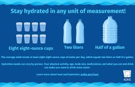

Medi.Well
Describe Your Health Issue
Healthy Living Tips

Exercise Regularly
At least 30 minutes a day helps maintain heart and lung health.
Follow Prescribed Medication
Take your medicine on time to manage chronic illnesses effectively.

Stay Hydrated
Drink 6-8 glasses of water daily to help digestion and circulation.
Top 5 Trusted Doctors
Dr. Anthony Fauci
Immunologist and Infectious Disease Expert
Dr. Atul Gawande
Surgeon, Writer and Public Health Researcher
Dr. Paul Farmer
Global Health and Infectious Disease Specialist
Dr. Sanjay Gupta
Neurosurgeon and Medical Correspondent
Dr. Devi Shetty
Cardiac Surgeon and Health Entrepreneur
Hospital Online Pages & Appointment Links
Hospitals in Bangladesh
- Evercare Hospital Dhaka – Book Appointment
- Square Hospital – Doctor Appointment
- Square Hospital
- Evercare (Apollo) Hospital Dhaka
- Labaid Specialized Hospital
International Hospitals
- Mayo Clinic (USA)
- Cleveland Clinic (USA)
- Mount Sinai Hospital (USA)
- SingHealth (Singapore)
- Fortis Healthcare (India)
- Apollo Hospitals (India)
- Bumrungrad International Hospital (Thailand)
World’s Best Hospitals – Official Links
- Albert Einstein Hospital (Brazil) – Book Appointment
- University Hospital Zurich (Switzerland) – Contact
- UZ Leuven (Belgium) – Appointments
- Cleveland Clinic Abu Dhabi – Book
- Karolinska Hospital (Sweden) – Patient Info
- Mayo Clinic (USA) – Request Appointment
- Cleveland Clinic (USA)
- Apollo Hospitals (India)
- Bumrungrad Hospital (Thailand)
- SingHealth (Singapore)
Home remedies with Safety Tips
Honey + Ginger
Benefits: Honey is a natural antibacterial agent that soothes the throat and helps suppress cough. Ginger has potent anti-inflammatory, antioxidant, and antiviral properties that help reduce throat irritation and boost immunity.
How to Make: Peel and finely grate 1 teaspoon of fresh ginger. Mix it thoroughly with 1 tablespoon of raw honey. Optionally, add a few drops of freshly squeezed lemon juice for added vitamin C and enhanced flavor.
Usage: Take 1-2 teaspoons of this mixture 2-3 times a day, especially when experiencing sore throat or cough symptoms. It can be taken directly or stirred into warm (not hot) water as a soothing tea.
Tips: Use raw, organic honey for maximum benefits. Avoid giving honey to infants under 1 year due to risk of botulism.
Safety: Do not use in children younger than 12 months. If allergic to honey or ginger, discontinue use immediately.
How to Make: Peel and finely grate 1 teaspoon of fresh ginger. Mix it thoroughly with 1 tablespoon of raw honey. Optionally, add a few drops of freshly squeezed lemon juice for added vitamin C and enhanced flavor.
Usage: Take 1-2 teaspoons of this mixture 2-3 times a day, especially when experiencing sore throat or cough symptoms. It can be taken directly or stirred into warm (not hot) water as a soothing tea.
Tips: Use raw, organic honey for maximum benefits. Avoid giving honey to infants under 1 year due to risk of botulism.
Safety: Do not use in children younger than 12 months. If allergic to honey or ginger, discontinue use immediately.
Turmeric Milk
Benefits: Turmeric contains curcumin, a powerful antioxidant and anti-inflammatory compound that supports the immune system, reduces joint pain, and improves digestion.
How to Make: Warm 1 cup of milk (dairy or plant-based alternatives like almond or soy). Stir in 1/2 teaspoon turmeric powder and a pinch of freshly ground black pepper to enhance curcumin absorption. You may also add a small amount of honey or cinnamon for flavor.
Usage: Drink this warm turmeric milk once daily, preferably before bedtime to promote relaxation and better sleep.
Tips: Use fresh turmeric powder if possible. Black pepper is essential for maximizing benefits.
Safety: Avoid if allergic to turmeric or if you have gallbladder problems. People who are lactose intolerant should use lactose-free milk alternatives.
How to Make: Warm 1 cup of milk (dairy or plant-based alternatives like almond or soy). Stir in 1/2 teaspoon turmeric powder and a pinch of freshly ground black pepper to enhance curcumin absorption. You may also add a small amount of honey or cinnamon for flavor.
Usage: Drink this warm turmeric milk once daily, preferably before bedtime to promote relaxation and better sleep.
Tips: Use fresh turmeric powder if possible. Black pepper is essential for maximizing benefits.
Safety: Avoid if allergic to turmeric or if you have gallbladder problems. People who are lactose intolerant should use lactose-free milk alternatives.
Steam Inhalation
Benefits: Steam inhalation helps loosen mucus in the nasal passages, relieves sinus congestion, and eases breathing difficulties associated with colds, allergies, or respiratory infections.
How to Make: Boil water and carefully pour it into a large heatproof bowl. Add 2-3 drops of eucalyptus or peppermint essential oil if available. Drape a towel over your head and the bowl to trap steam. Breathe deeply through your nose for 5-10 minutes.
Usage: Use steam inhalation 1-2 times daily during congestion.
Tips: Keep your eyes closed during the process to avoid irritation. Keep a safe distance to avoid burns.
Safety: Do not use steam inhalation for young children or infants. Avoid direct contact with hot water or steam to prevent burns. People with asthma should use with caution.
How to Make: Boil water and carefully pour it into a large heatproof bowl. Add 2-3 drops of eucalyptus or peppermint essential oil if available. Drape a towel over your head and the bowl to trap steam. Breathe deeply through your nose for 5-10 minutes.
Usage: Use steam inhalation 1-2 times daily during congestion.
Tips: Keep your eyes closed during the process to avoid irritation. Keep a safe distance to avoid burns.
Safety: Do not use steam inhalation for young children or infants. Avoid direct contact with hot water or steam to prevent burns. People with asthma should use with caution.
Aloe Vera
Benefits: Aloe vera gel has cooling, soothing, anti-inflammatory, and healing properties that help with burns, cuts, skin irritation, and dry skin conditions.
How to Make: Cut a fresh aloe vera leaf and scoop out the clear gel inside. Use immediately or store in a clean container refrigerated for up to a week.
Usage: Apply a thin layer of gel directly onto affected skin areas 2-3 times daily.
Tips: Always do a patch test on a small skin area to check for sensitivity or allergic reactions.
Safety: Avoid ingestion unless under medical supervision. Stop use if irritation or rash develops.
How to Make: Cut a fresh aloe vera leaf and scoop out the clear gel inside. Use immediately or store in a clean container refrigerated for up to a week.
Usage: Apply a thin layer of gel directly onto affected skin areas 2-3 times daily.
Tips: Always do a patch test on a small skin area to check for sensitivity or allergic reactions.
Safety: Avoid ingestion unless under medical supervision. Stop use if irritation or rash develops.
Salt Water Gargle
Benefits: Gargling with salt water reduces throat inflammation, loosens mucus, and kills bacteria, helping relieve sore throat symptoms.
How to Make: Dissolve 1/2 teaspoon of non-iodized salt in 1 cup of warm (not hot) water.
Usage: Gargle for 30 seconds and spit out. Repeat 2-3 times a day.
Tips: Use warm water to maximize salt solubility and comfort.
Safety: Do not swallow the gargle solution. Avoid frequent use if you have high blood pressure due to salt content.
How to Make: Dissolve 1/2 teaspoon of non-iodized salt in 1 cup of warm (not hot) water.
Usage: Gargle for 30 seconds and spit out. Repeat 2-3 times a day.
Tips: Use warm water to maximize salt solubility and comfort.
Safety: Do not swallow the gargle solution. Avoid frequent use if you have high blood pressure due to salt content.
Garlic
Benefits: Garlic contains allicin, a compound with antibacterial, antiviral, and immune-boosting properties.
How to Make: Crush or finely chop 1-2 cloves of raw garlic and allow it to sit for 10 minutes to activate allicin.
Usage: Consume raw with meals or mix into warm water or honey to reduce pungency.
Tips: Use fresh garlic daily for best effects.
Safety: Avoid on an empty stomach if you have gastritis, ulcers, or acid reflux. Excessive intake may cause bad breath and stomach upset.
How to Make: Crush or finely chop 1-2 cloves of raw garlic and allow it to sit for 10 minutes to activate allicin.
Usage: Consume raw with meals or mix into warm water or honey to reduce pungency.
Tips: Use fresh garlic daily for best effects.
Safety: Avoid on an empty stomach if you have gastritis, ulcers, or acid reflux. Excessive intake may cause bad breath and stomach upset.
Peppermint Tea
Benefits: Peppermint tea relaxes muscles of the digestive tract, reduces bloating, and eases headaches due to its menthol content.
How to Make: Steep 1 tablespoon of fresh or dried peppermint leaves in 1 cup boiling water for 5-10 minutes. Strain before drinking.
Usage: Drink 1-2 cups daily, preferably after meals.
Tips: Fresh peppermint leaves give a stronger flavor and higher benefits.
Safety: Avoid if you suffer from acid reflux or GERD as peppermint may worsen symptoms.
How to Make: Steep 1 tablespoon of fresh or dried peppermint leaves in 1 cup boiling water for 5-10 minutes. Strain before drinking.
Usage: Drink 1-2 cups daily, preferably after meals.
Tips: Fresh peppermint leaves give a stronger flavor and higher benefits.
Safety: Avoid if you suffer from acid reflux or GERD as peppermint may worsen symptoms.
Lemon Water
Benefits: Lemon water aids digestion, flushes out toxins, promotes hydration, and provides vitamin C.
How to Make: Squeeze the juice of half a fresh lemon into a glass of warm or room temperature water.
Usage: Drink first thing in the morning on an empty stomach.
Tips: Use fresh lemons, not bottled lemon juice.
Safety: Rinse your mouth after drinking to prevent acid erosion on teeth. Avoid if you have citrus allergies.
How to Make: Squeeze the juice of half a fresh lemon into a glass of warm or room temperature water.
Usage: Drink first thing in the morning on an empty stomach.
Tips: Use fresh lemons, not bottled lemon juice.
Safety: Rinse your mouth after drinking to prevent acid erosion on teeth. Avoid if you have citrus allergies.
Chamomile Tea
Benefits: Chamomile promotes relaxation, reduces anxiety, helps with insomnia, and has mild anti-inflammatory effects.
How to Make: Steep 1-2 teaspoons of dried chamomile flowers or a tea bag in boiling water for 5-10 minutes.
Usage: Drink 1 cup before bedtime to help improve sleep quality.
Tips: Avoid sweetening with sugar; use honey or drink plain.
Safety: May cause allergic reactions in people allergic to ragweed, daisies, or chrysanthemums.
How to Make: Steep 1-2 teaspoons of dried chamomile flowers or a tea bag in boiling water for 5-10 minutes.
Usage: Drink 1 cup before bedtime to help improve sleep quality.
Tips: Avoid sweetening with sugar; use honey or drink plain.
Safety: May cause allergic reactions in people allergic to ragweed, daisies, or chrysanthemums.
Yogurt
Benefits: Rich in probiotics that support gut microbiota, improve digestion, and boost immunity.
How to Make: Eat plain, unsweetened yogurt, preferably with live active cultures.
Usage: Consume 1 small bowl daily, can be mixed with fruits or nuts.
Tips: Avoid flavored yogurts with added sugars or artificial ingredients.
Safety: Avoid if allergic to dairy or lactose intolerant unless using lactose-free alternatives.
How to Make: Eat plain, unsweetened yogurt, preferably with live active cultures.
Usage: Consume 1 small bowl daily, can be mixed with fruits or nuts.
Tips: Avoid flavored yogurts with added sugars or artificial ingredients.
Safety: Avoid if allergic to dairy or lactose intolerant unless using lactose-free alternatives.
Ginger Tea
Benefits: Helps reduce nausea, stimulates digestion, and relieves inflammation.
How to Make: Slice a 1-inch piece of fresh ginger. Boil it in 2 cups of water for 10 minutes. Strain and add honey or lemon if desired.
Usage: Drink 1 cup 1-2 times daily.
Tips: Fresh ginger provides more benefits than powdered form.
Safety: Limit intake during pregnancy. May interact with blood-thinning medications.
How to Make: Slice a 1-inch piece of fresh ginger. Boil it in 2 cups of water for 10 minutes. Strain and add honey or lemon if desired.
Usage: Drink 1 cup 1-2 times daily.
Tips: Fresh ginger provides more benefits than powdered form.
Safety: Limit intake during pregnancy. May interact with blood-thinning medications.
Coconut Oil
Benefits: Contains fatty acids that moisturize skin, promote hair growth, and have mild antimicrobial properties.
How to Make: Use virgin or extra-virgin coconut oil as is.
Usage: Apply to skin as moisturizer or use as hair mask 2-3 times per week.
Tips: Warm oil slightly before application for better absorption.
Safety: Conduct patch test to avoid allergic reactions. Not recommended for oily or acne-prone skin.
How to Make: Use virgin or extra-virgin coconut oil as is.
Usage: Apply to skin as moisturizer or use as hair mask 2-3 times per week.
Tips: Warm oil slightly before application for better absorption.
Safety: Conduct patch test to avoid allergic reactions. Not recommended for oily or acne-prone skin.
Apple Cider Vinegar
Benefits: May support blood sugar regulation, aid digestion, and promote weight management.
How to Make: Dilute 1-2 teaspoons of raw, unfiltered apple cider vinegar in 1 glass (250 ml) of water.
Usage: Drink once daily before meals.
Tips: Always dilute before drinking. Use a straw to minimize contact with teeth.
Safety: Excessive intake can erode tooth enamel and cause throat irritation.
How to Make: Dilute 1-2 teaspoons of raw, unfiltered apple cider vinegar in 1 glass (250 ml) of water.
Usage: Drink once daily before meals.
Tips: Always dilute before drinking. Use a straw to minimize contact with teeth.
Safety: Excessive intake can erode tooth enamel and cause throat irritation.
Eucalyptus Oil
Benefits: Eucalyptus oil has decongestant, antiseptic, and anti-inflammatory properties.
How to Use: Add a few drops to boiling water for steam inhalation or dilute with carrier oil for topical application.
Usage: Use steam inhalation for congestion or apply diluted oil to chest.
Tips: Never apply undiluted oil directly to skin.
Safety: Keep away from eyes and sensitive areas. Avoid use in children under 2 years.
How to Use: Add a few drops to boiling water for steam inhalation or dilute with carrier oil for topical application.
Usage: Use steam inhalation for congestion or apply diluted oil to chest.
Tips: Never apply undiluted oil directly to skin.
Safety: Keep away from eyes and sensitive areas. Avoid use in children under 2 years.
Basil Leaves
Benefits: Basil leaves contain antioxidants and have anti-inflammatory, antibacterial, and adaptogenic properties.
How to Use: Chew fresh leaves or make a tea by boiling leaves in water.
Usage: Consume fresh leaves daily or drink tea 1-2 times per day.
Tips: Use organic basil to avoid pesticides.
Safety: Consult a doctor before use if pregnant or taking blood thinners.
How to Use: Chew fresh leaves or make a tea by boiling leaves in water.
Usage: Consume fresh leaves daily or drink tea 1-2 times per day.
Tips: Use organic basil to avoid pesticides.
Safety: Consult a doctor before use if pregnant or taking blood thinners.
Cinnamon
Benefits: Cinnamon has anti-inflammatory, antioxidant, and blood sugar regulating effects.
How to Use: Add 1/2 teaspoon cinnamon powder to warm milk or tea.
Usage: Consume once daily.
Tips: Use Ceylon cinnamon (true cinnamon) rather than cassia cinnamon to avoid high coumarin intake.
Safety: Excessive intake may cause liver issues.
How to Use: Add 1/2 teaspoon cinnamon powder to warm milk or tea.
Usage: Consume once daily.
Tips: Use Ceylon cinnamon (true cinnamon) rather than cassia cinnamon to avoid high coumarin intake.
Safety: Excessive intake may cause liver issues.
Warm Compress
Benefits: Warm compress helps relieve muscle pain, improve circulation, and reduce stiffness.
How to Use: Soak a clean cloth in warm water, wring out excess, and apply to the affected area for 15-20 minutes.
Usage: Repeat 3-4 times daily as needed.
Tips: Ensure water is warm, not hot, to avoid burns.
Safety: Avoid applying heat to open wounds or swollen areas.
How to Use: Soak a clean cloth in warm water, wring out excess, and apply to the affected area for 15-20 minutes.
Usage: Repeat 3-4 times daily as needed.
Tips: Ensure water is warm, not hot, to avoid burns.
Safety: Avoid applying heat to open wounds or swollen areas.
Oatmeal Bath
Benefits: Oatmeal bath soothes dry, itchy, and irritated skin due to its anti-inflammatory and moisturizing properties.
How to Use: Add 1 cup of finely ground oatmeal to warm bathwater. Soak for 15-20 minutes.
Usage: Use 2-3 times per week.
Tips: Use colloidal oatmeal for best results.
Safety: Avoid if you have open wounds.
How to Use: Add 1 cup of finely ground oatmeal to warm bathwater. Soak for 15-20 minutes.
Usage: Use 2-3 times per week.
Tips: Use colloidal oatmeal for best results.
Safety: Avoid if you have open wounds.
Vitamin C Rich Foods
Benefits: Vitamin C boosts immunity, aids wound healing, and acts as a powerful antioxidant.
How to Use: Eat citrus fruits, strawberries, kiwi, bell peppers, and leafy greens regularly.
Usage: Aim for 75-90 mg daily (varies by age and condition).
Tips: Consume fresh fruits raw to preserve vitamin C.
Safety: Excessive vitamin C intake can cause stomach upset.
How to Use: Eat citrus fruits, strawberries, kiwi, bell peppers, and leafy greens regularly.
Usage: Aim for 75-90 mg daily (varies by age and condition).
Tips: Consume fresh fruits raw to preserve vitamin C.
Safety: Excessive vitamin C intake can cause stomach upset.
Hydration
Benefits: Proper hydration supports overall health, improves skin, aids digestion, and helps maintain bodily functions.
How to Use: Drink at least 8 glasses (2 liters) of water daily.
Usage: Spread water intake throughout the day.
Tips: Increase intake during hot weather or physical activity.
Safety: Avoid excessive water intake which can cause hyponatremia.
How to Use: Drink at least 8 glasses (2 liters) of water daily.
Usage: Spread water intake throughout the day.
Tips: Increase intake during hot weather or physical activity.
Safety: Avoid excessive water intake which can cause hyponatremia.
Patient Reviews
“Excellent service! Doctor was so helpful.”
“Very satisfied with the treatment. Highly recommended.”
“The diagnosis was accurate and well explained.”
“Efficient appointment process and friendly staff.”
“I appreciated the follow-up and care shown after my visit.”
Healthy Diet Chart by Age Group
User Login
Why Choose Medi.Well?
- Experienced and trusted top doctors specialized in various health fields.
- Easy appointment booking with verified appointment numbers.
- Comprehensive health problem descriptions and proven solutions.
- Safe and effective home remedies with important safety tips.
- Personalized healthy diet plans tailored for all age groups.
- Real patient reviews to build your trust and confidence.
- User-friendly, fully responsive, and authorized for secure health support.